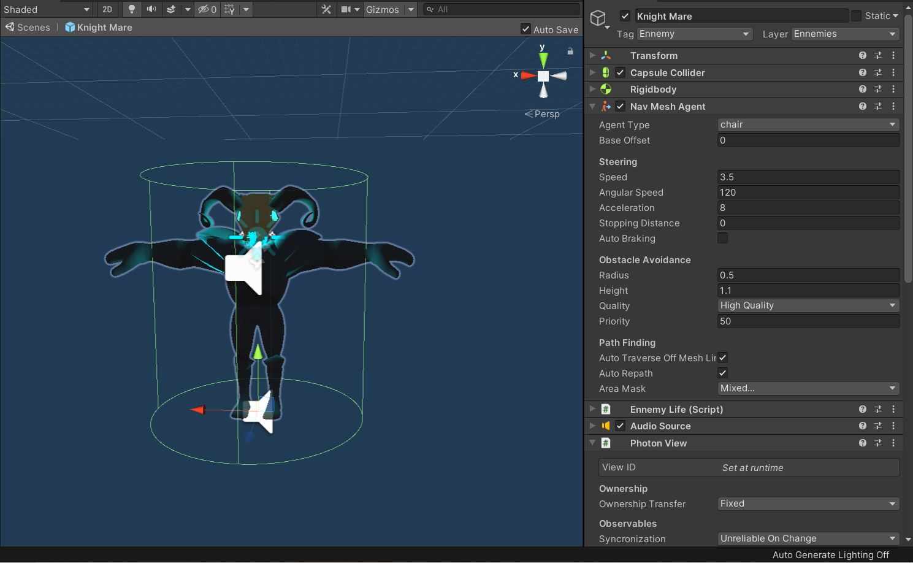

L'IA
Voici certainement la partie qui nous a demandé le plus d'attention jusqu'ici. Un monstre a plusieurs comportements selon les situations, le tout étant géré par un NavMeshAgent. Par défaut, il fait des rondes autour de son point de départ. Lorsqu'il est proche d'un joueur il se tourne vers lui et se met à le poursuivre. Enfin, lorsqu'il arrive à sa portée, il lui tire des projectiles semblables aux Bullets tirés par le joueur.
